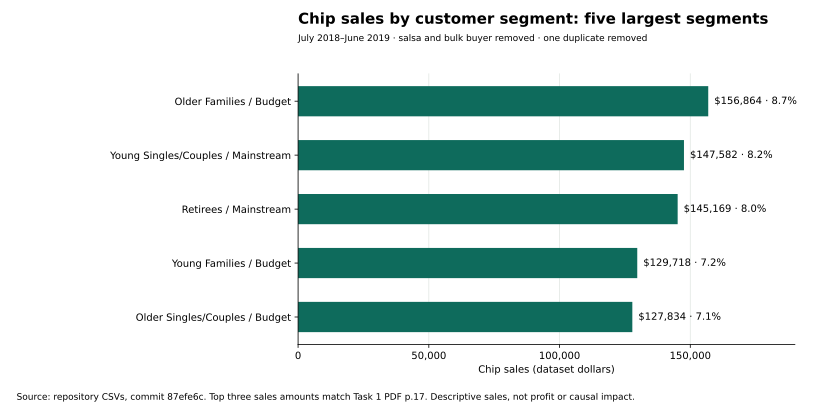

Retail customer analysis with reconciled segment results, followed by a transparent review of store-trial claims and a separate diagnostic reconstruction.
Original work: R · data.table · ggplot2July 2018–June 2019 dataIndependent reconciliation: October 2026
Who drives category sales, and what can a trial establish?
Task 1 examines chip purchasing across life-stage and spending segments. Task 2 compares three trial stores with controls. These are different questions, and their evidence must be evaluated separately.
The recovered Task 1 PDF contains executed aggregate outputs that can be reconciled to the repository CSVs. The recovered Task 2 PDF exposes broken control-summary logic and does not substantiate its significance statements.
Reconciled finding
Budget Older Families, Mainstream Young Singles/Couples, and Mainstream Retirees are the three largest segment combinations by chip sales. Their sales amounts match the original Task 1 PDF.
Commercial interpretation
The top three account for 24.9% of cleaned chip sales. They are candidates for deeper assortment and promotion analysis, subject to margin, costs, and experimental validation.
Trial evidence status
Original uplift and significance claims remain unverified. Corrected store comparisons are available as a separately labeled reconstruction, not as the original experiment’s proven effects.
246,739CLEANED CHIP PRODUCT LINE ITEMSSalsa excluded; bulk buyer and one duplicate removed
71,287DISTINCT CUSTOMERSMatched to unique customer keys without row inflation
21 segmentsLIFESTAGE × SPENDING CATEGORYOnly aggregate data is republished
Scope: This is a virtual job simulation. Reconciled customer sales are descriptive; neither segment rankings nor reconstructed trial gaps establish causal impact, profit, or realized client revenue.
Task 1 · Reconciled customer evidence
Start with the findings that reconcile.

Three customer segments contribute 24.9% of chip sales.The top three sales amounts match page 17 of the recovered Task 1 PDF. The published snapshot also removes one exact duplicate from a different segment. Open chart at full size ↗ · Download all 21 segment rows ↓
July 2018–June 2019 · cleaned chip scope · amounts use the dataset’s dollar units
Customer segment
Sales
Sales share
Distinct customers
Older Families / Budget
$156,863.75
8.69%
4,611
Young Singles/Couples / Mainstream
$147,582.20
8.18%
7,917
Retirees / Mainstream
$145,168.95
8.04%
6,358
Young Families / Budget
$129,717.95
7.19%
3,953
Older Singles/Couples / Budget
$127,833.60
7.08%
4,849
Scale and mix differ
Budget Older Families lead sales at $156,863.75 with 4,611 customers. Mainstream Young Singles/Couples contribute $147,582.20 with 7,917 customers. Similar sales totals can reflect different customer volumes and purchasing intensity.
Use rankings to form a test
Investigate category mix and margin for these segments before targeting a promotion. A high observed sales share is not proof that a segment will respond to an intervention.
Historical reconciliation: The Task 1 cleaning path produces 246,740 rows and $1,805,177.70 in chip sales, consistent with the PDF outputs. Removing the exact duplicate produces 246,739 rows and $1,805,171.70. The top three sales amounts are unchanged; percentage denominators change slightly.
Task 2 · Original trial effects remain unverified
The executed Task 2 PDF prints controls 50, 114, and 123 during the three store-selection stages. Its final summary instead contains NA, NA, and 123, followed by hard-coded significance descriptions. Those statements are not calculated hypothesis-test results.
The original R Markdown selects the second-ranked candidate, mutates shared data.table objects, mixes scaled and unscaled controls in its bands, and lacks defensible effect-uncertainty output. The recovered PDF confirms these problems rather than resolving them.
Separate diagnostic reconstruction — not validated original uplift
These numbers are newly reproduced descriptive comparisons under a revised method. They are not the original trial’s verified effect estimates, p-values, or evidence of realized revenue.
The Task 1 source confirms a chip-only product scope. The revised reconstruction excludes salsa, removes the bulk buyer and duplicate, matches stores using July–January sales/customer metrics, selects the top eligible non-trial control, and compares February–April totals after pre-period scaling.
Revised chip-only diagnostic · February–April 2019 · no causal or significance interpretation
Trial / revised control
Observed chip sales
Scaled control sales
Descriptive gap
77 / 233
$724.80
$567.18
+27.8%
86 / 155
$2,622.20
$2,350.61
+11.6%
88 / 237
$4,123.60
$3,610.56
+14.2%
The earlier homepage’s 26.2%, 13.2%, and 12.1% figures came from an all-product reconstruction that included salsa. They have been retired as headline project results. Their arithmetic was reproduced, but they did not validate the historical chip-only trial analysis.
Exclude salsa names, identify the bulk buyer from the two 200-unit purchases, and apply the historical Task 1 cleaning path. Independently reconcile the original aggregate outputs, then remove one exact duplicate for the published corrected snapshot.
Validate the join
The customer key is unique in the source customer table. A many-to-one join has zero unmatched rows and no row inflation. Aggregate by life-stage and spending category; sum sales/units and count distinct customers.
Reconcile and preserve grain
Check row totals, sales totals, all segment shares, and the top three printed PDF amounts. Product line items, transactions, distinct customers, and customer-month counts remain different measures.
Limit statistical claims
The Task 1 price comparison uses purchase rows that may repeat customers; its printed row-level t-test is not adopted as independent-customer inference or price-elasticity evidence. Brand-cleaning and pack-size conventions also need review before using affinity rankings.
The original analyses use R. The new reconciliation and diagnostic reconstruction ran independently in Python against pinned repository CSVs. The original R scripts were inspected, not executed in this environment.
Before a rollout: Recover the intended cleaned trial input and a valid effect/uncertainty analysis, or run a confirmatory test that accounts for promotions, seasonality, pricing, store selection, and implementation cost. No $200K projection is supported by the reviewed material.
Aggregate evidence & code
Inspect the calculation without customer rows.
The raw repository inputs are pinned to commit 87efe6c. The recovered Task 1 PDF includes customer identifiers, so it is not republished. The original Quantium PDFs remain review inputs; public evidence consists of aggregate exports, code, and a provenance review.